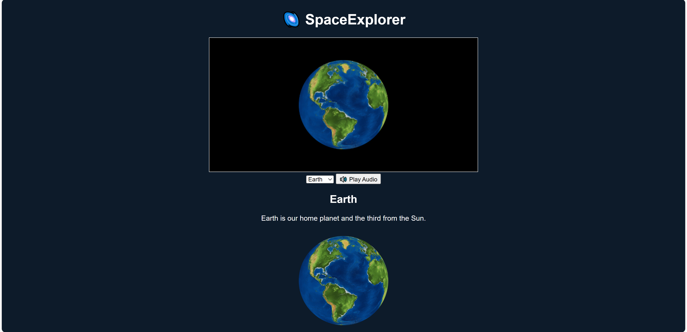
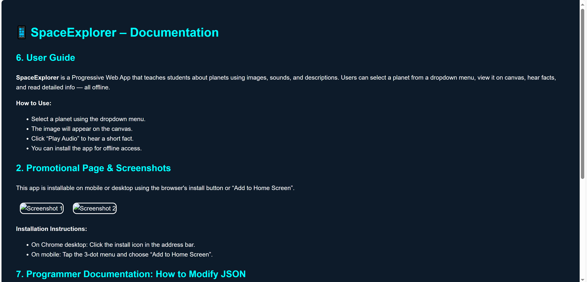

SpaceExplorer is a Progressive Web App that teaches students about planets using images, sounds, and descriptions. Users can select a planet from a dropdown menu, view it on canvas, hear facts, and read detailed info — all offline.
How to Use:
This app is installable on mobile or desktop using the browser's install button or “Add to Home Screen”.
 Installation Instructions:
To add new planet topics, open the data.json file and modify the array inside:
[
{
"title": "Venus",
"description": "Venus is the second planet from the Sun.",
"image": "assets/images/venus.png",
"audio": "assets/sounds/venus.mp3"
}
]Make sure to place the corresponding .png and .mp3 files in the correct folders:
assets/images/ → for the imageassets/sounds/ → for the audioAfter saving, reload the app — the new planet will appear automatically in the dropdown menu.